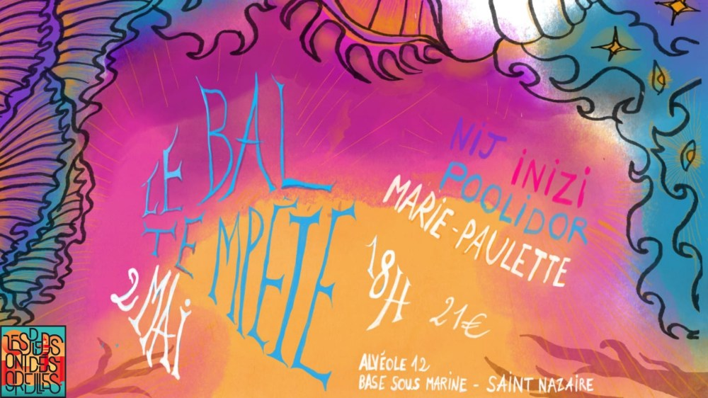

BAL TEMPÊTE☔️⚡️électrofolk

☔️⚡ LE BAL TEMPÊTE ⚡☔️
Le bal électro qui fait danser toutes les générations, où l’héritage rencontre la modernité… et où la houle fait trembler le dancefloor 💥🕺💃
📍 Samedi 2 mai – Alvéole 12, Saint-Nazaire
🕙 De 10h30 à 2h30 du matin
🎟️ Entrée : 21 €
🍔 Food trucks sur place
🍹 Bar ouvert toute la soirée
🎭 Soirée déguisée (thème surprise… préparez vos plus belles tempêtes 🌪️)
🌊 LE PROGRAMME (attachez vos cirés) 🌊
⚓ STAGES DE DANSE – Salle Gambetta
10h30–12h30 : INIZI – Atelier d’improvisation à deux
13h00–15h30 : Gaëlle Le Large – Atelier d’approfondissement mazurka
16h00–18h00 : Marion Purple – Atelier élasticité de la danse
⚡ BAL ÉLECTROFOLK – Alvéole 12 ⚡
16h30 : Accueil du public
17h–18h : Initiation par Les Danseries Dégenrées
18h : Ouverture de l’Alvéole 12
(guinguette, repas, animations, discours)
19h–20h30 : Marie Paulette (concert)
20h30–21h : INIZI – électrofolk
21h–22h30 : Poolidor (concert)
22h30–23h : INIZI – électrofolk
23h–00h30 : NIJ (concert)
00h30–01h30 : INIZI – DJ set
02h : Fermeture de la salle au public ⚓🌙
🌪️ Un bal, une tempête, une mer de danse, et une seule règle : lâcher prise.
Viens onduler, tournoyer, sauter, transpirer, rire… et te faire emporter par la vague 🔥
👉 On vous attend nombreu.es.x à bord du Bal Tempête !
BILLETTERIE
https://www.helloasso.com/associations/les-pieds-ont-des-oreilles/evenements/le-bal-tempete